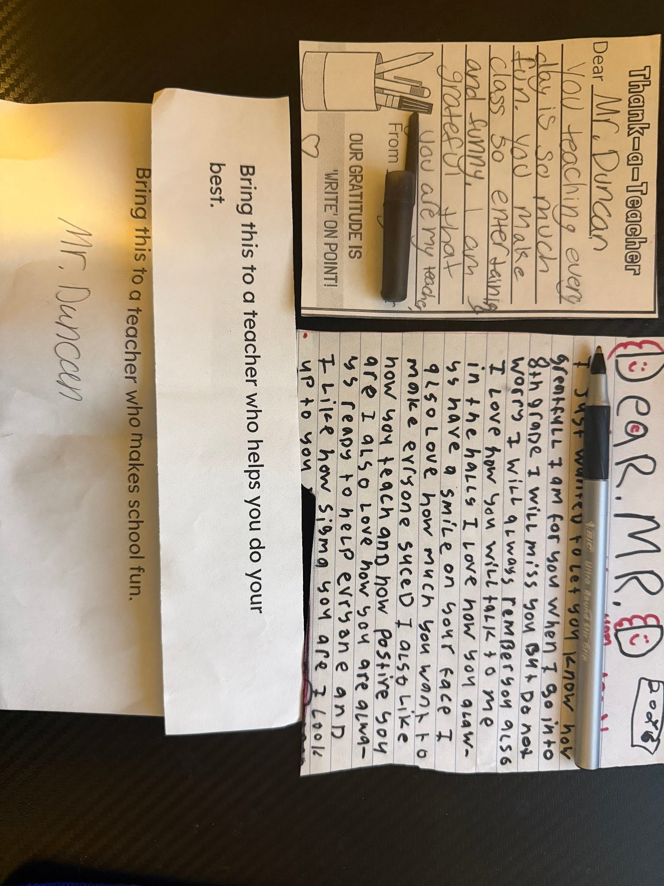

Building respectful relationships with students is essential when working towards building a productive classroom. It helps students recognize that we are here to help them, that we are going to hear them out, and that we respect who they are as people and the experiences they have had. This artifact, in specific, displays a few of the many relationships that I have been fortunate enough to make with my students during my student teaching. To help build these relationships, I often talk to my students during passing time and during designated parts of class to learn more about them as people and what their interests are outside of school. Also, since I have started coaching, getting to interact with students outside of school has also helped me in getting to know who they actually are and where their interests lie. Learning about my students' lives and interests outside of school helps me to connect with and motivate students to learn and work hard in my class.